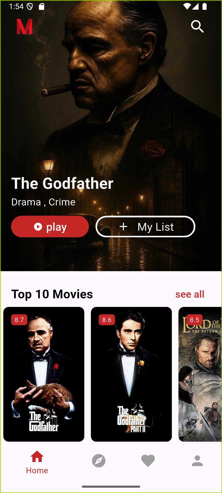
Independent Flutter Application
Mova
Bilingual movie discovery with TMDB data, Firebase-backed user services, watchlists, media features, and RTL support.
FlutterProviderTMDB APIFirebase
I build Flutter applications, machine-learning solutions, and interactive analytics—from mobile UI and service integration to on-device AI and Power BI reporting.
My portfolio combines mobile development, machine learning, and analytics. The projects below show Flutter engineering, API and Firebase integration, model development and evaluation, on-device TensorFlow Lite inference, and Power BI dashboard design.
Three projects highlight the breadth of my work across mobile development, on-device AI, and data analytics. Explore the full collection by discipline for deeper technical work.

Bilingual movie discovery with TMDB data, Firebase-backed user services, watchlists, media features, and RTL support.
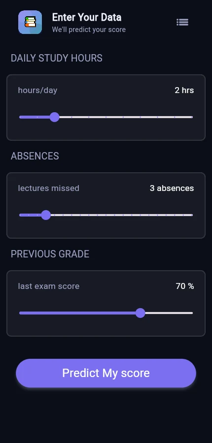
Bilingual Flutter app that runs a custom regression model on-device and turns predictions into feedback and study guidance.
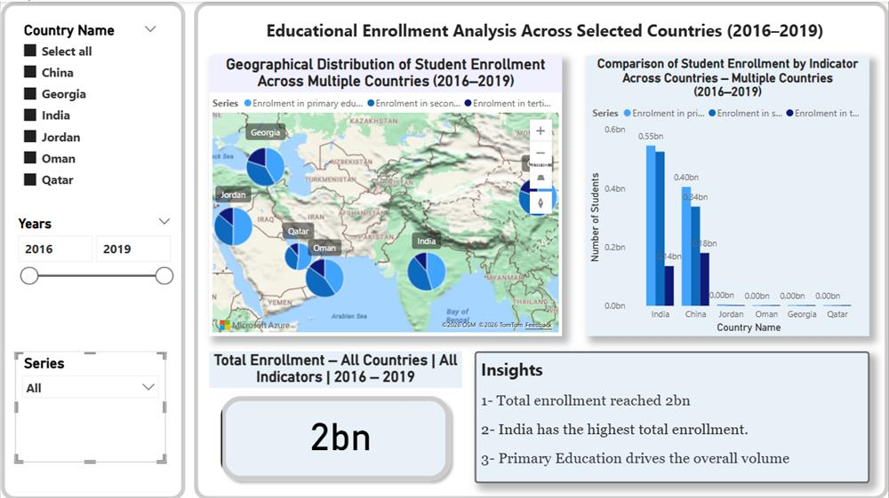
Two-page Power BI analysis of World Bank enrollment data across six countries from 2016 to 2019.
Bilingual movie discovery with TMDB data, Firebase-backed user services, watchlists, media features, and RTL support.
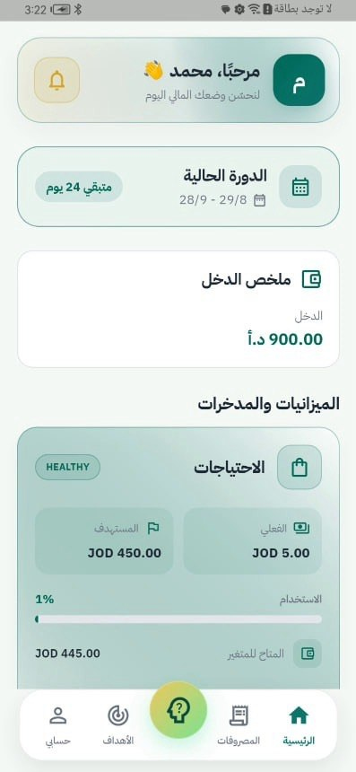
Bilingual finance app with expense, planning, goal, receipt, voice, analysis, and service-integrated mobile flows.
Bilingual Flutter app that runs a custom regression model on-device and turns predictions into feedback and study guidance.
Business-focused churn classification with leakage-aware preprocessing, engineered features, model comparison, and held-out evaluation.
TensorFlow regression experiment with leakage-aware preprocessing, nine training configurations, baseline comparison, and model export.
Two-page Power BI analysis of World Bank enrollment data across six countries from 2016 to 2019.
Skills are grouped by how they are applied across projects—not by arbitrary proficiency percentages.
Product-focused mobile engineering and integrated user journeys.
Structured analysis from preparation through evaluation.
Model development connected to product experiences.
Interactive reporting and clear data storytelling.
Tools used across mobile, data, and collaborative delivery.
Certificate previews preserve the full document without cropping. Open any credential for a larger readable view and verified details.
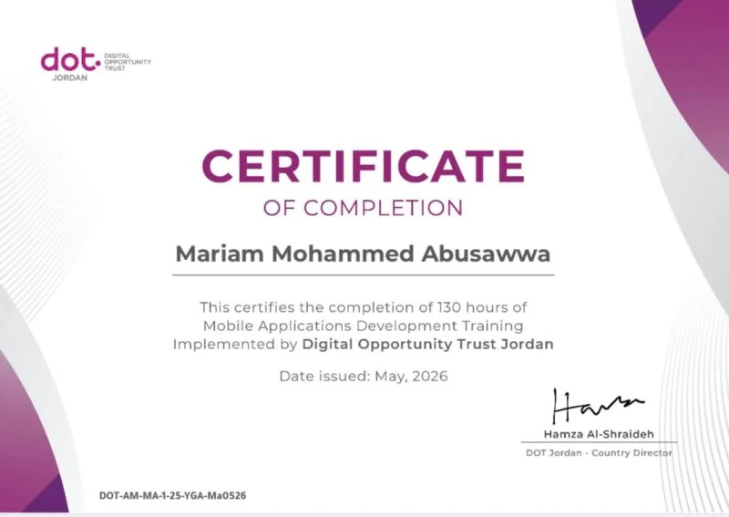
DOT Jordan
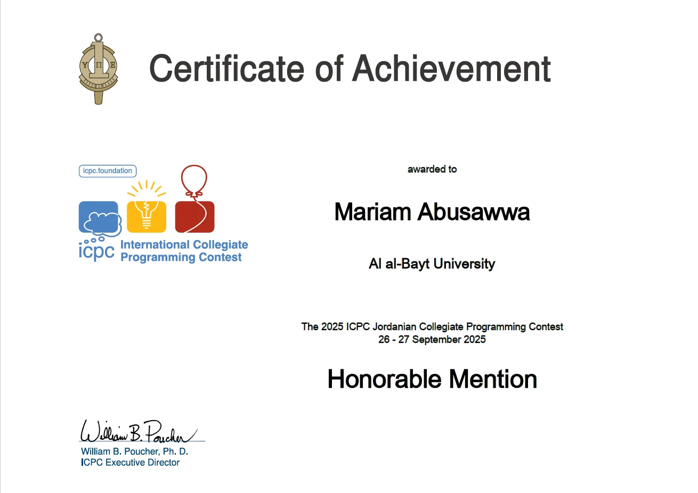
Al al-Bayt University
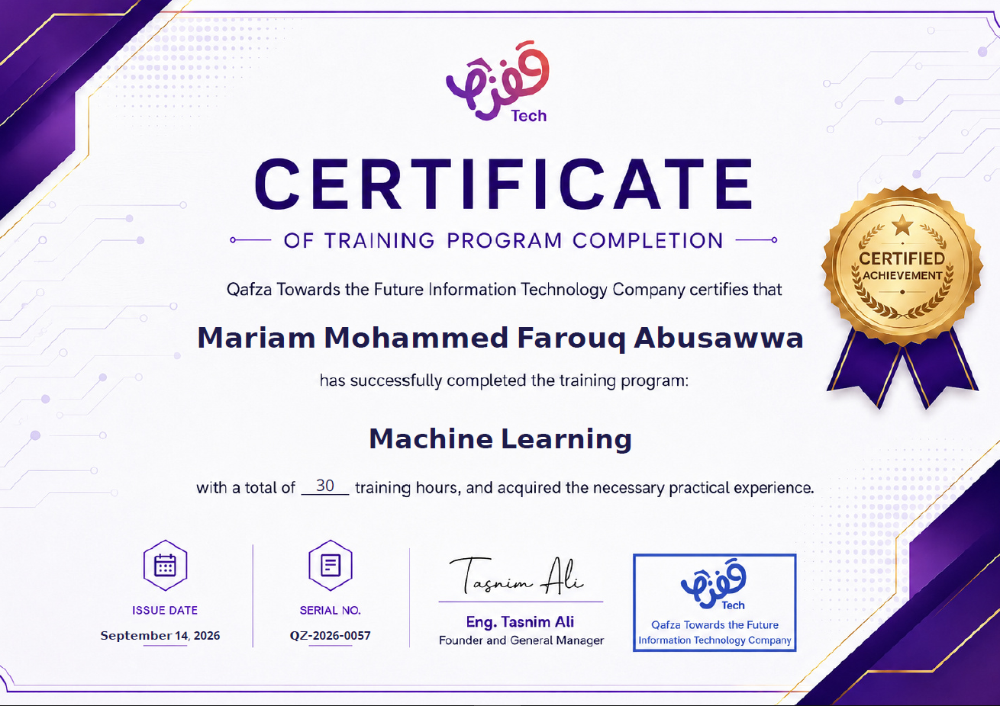
Qafza Tech
130 hours · May 2026
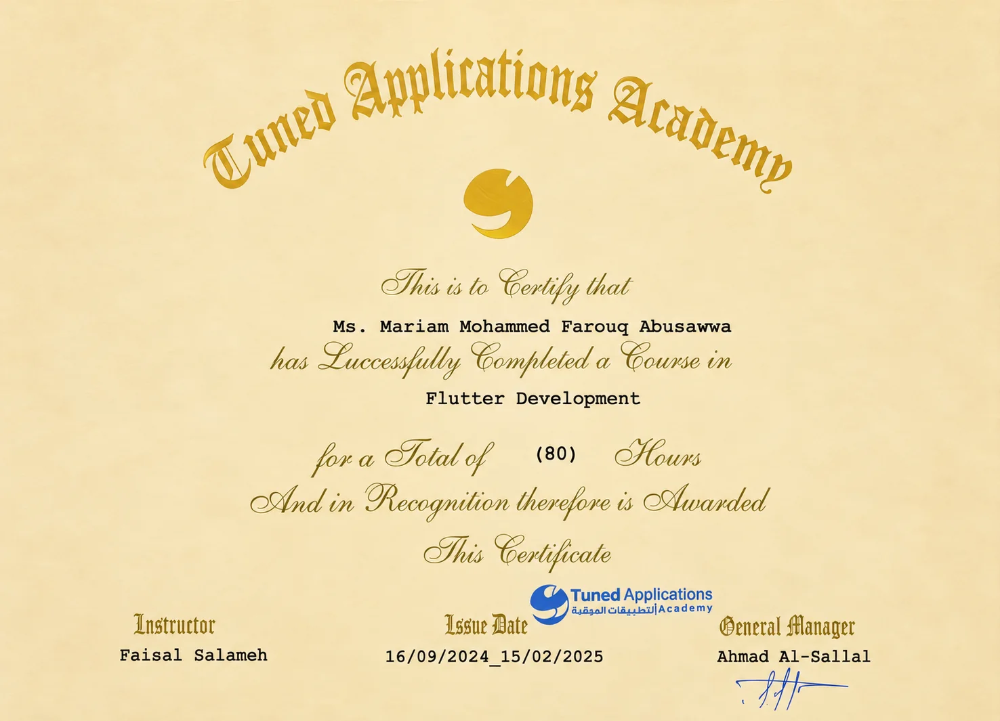
80 hours · 2024–2025
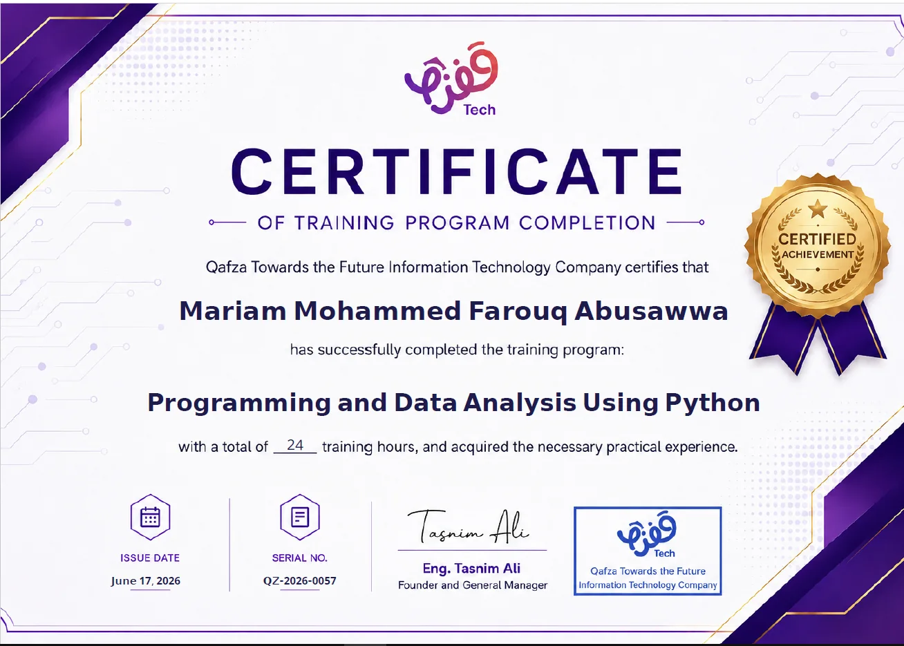
24 hours · June 2026
30 hours · September 2026
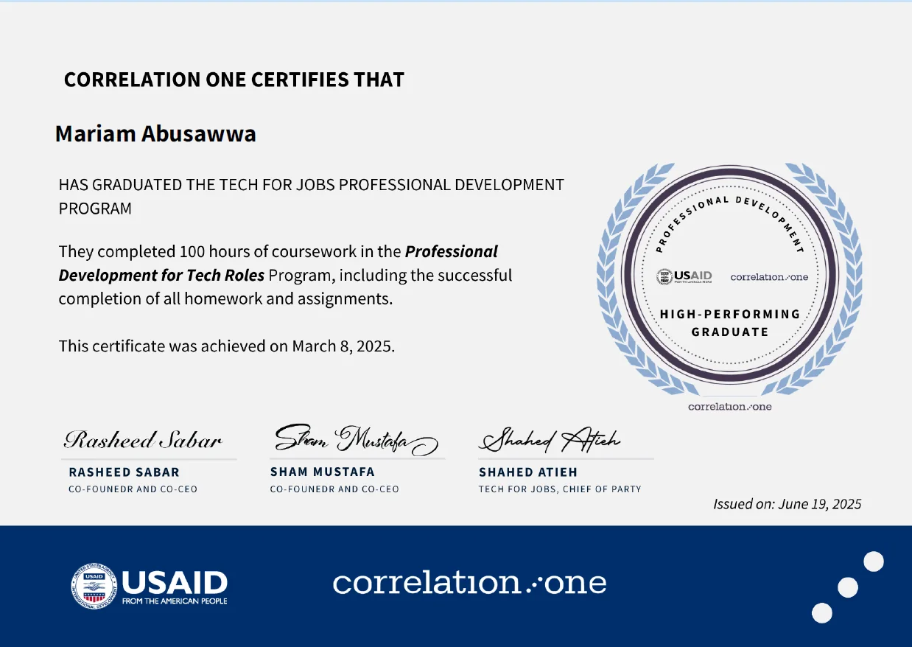
100 hours · 2025
160 hours · 2021–2022
Honorable Mention · Sep 2025
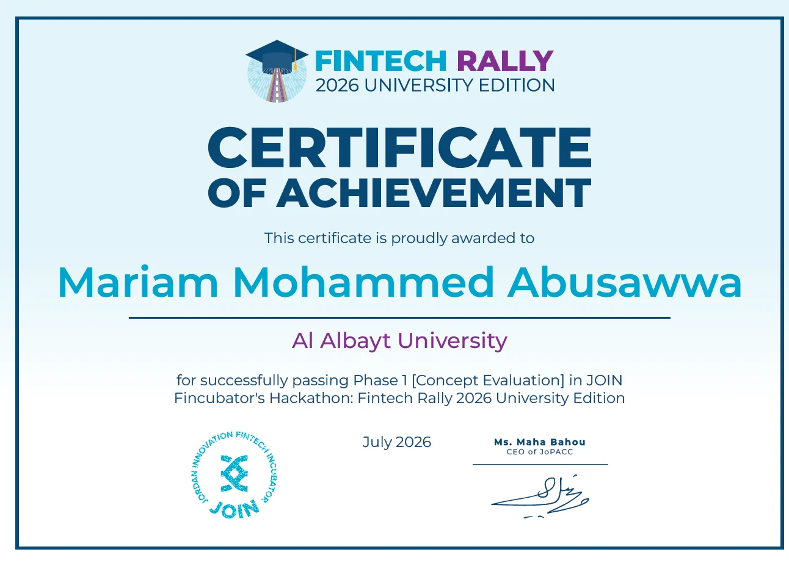
Passed Phase 1: Concept Evaluation · July 2026
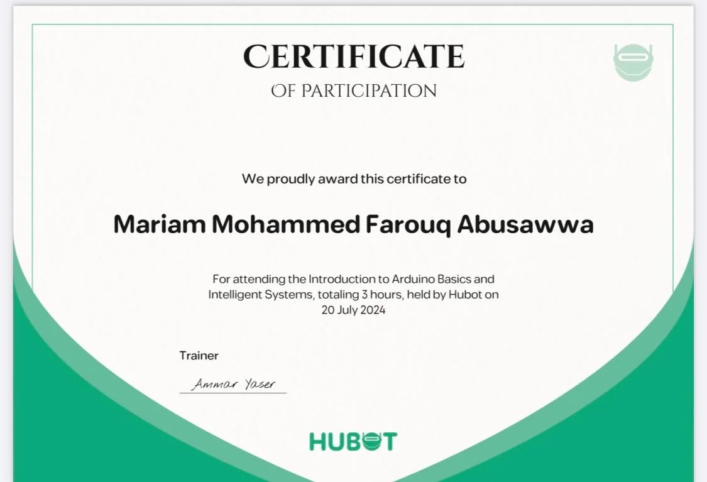
3 hours · July 2024
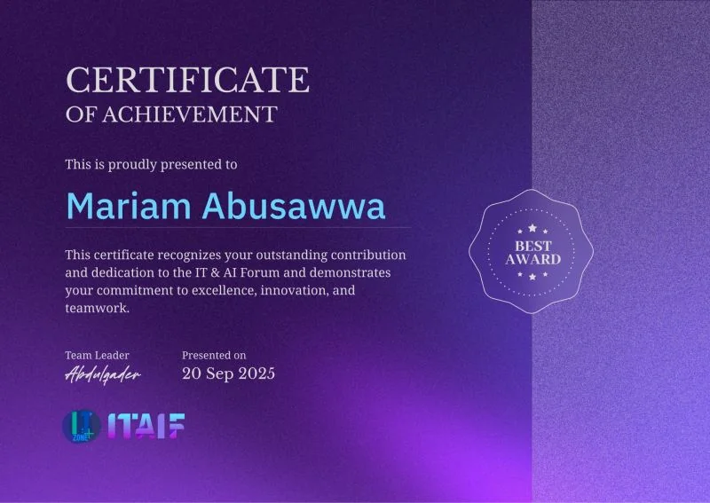
Recognition for contribution, dedication, innovation, teamwork, and participation · Sep 20, 2025.
Academic foundation, intensive Flutter training, multidisciplinary product delivery, competitions, and continuous technical development.
Al al-Bayt University · Mafraq, Jordan
130 hours with DOT Jordan plus 80 hours with Tuned Applications Academy.
Deep-learning model development, TensorFlow Lite deployment, machine-learning evaluation, and Power BI analytics alongside mobile engineering.